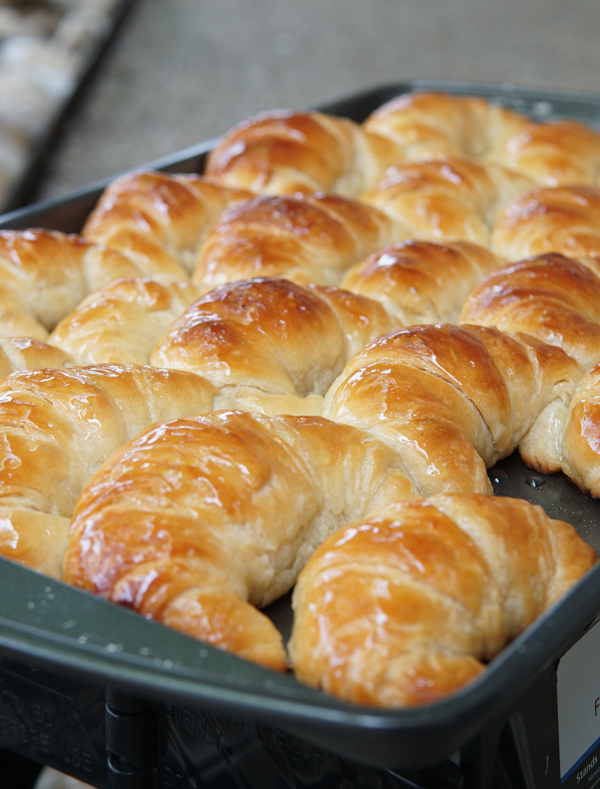

Medialunas Argentinas
Argentinian croissants known for their buttery texture and flaky layers.
This recipe is easier than traditional croissants but requires some
patience.

Ingredients
Dough (Détrempe)
- 500 grams all-purpose flour
- 10 grams salt
- 80 grams sugar
- 300 milliliters cold whole milk
- 7 grams active dry yeast
- 30 grams honey
- 1 teaspoon vanilla extract
Butter Layer (Beurrage)
- 200 grams unsalted butter (at room temperature)
- 25 grams all-purpose flour
Egg Wash
Syrup
- 200 grams sugar
- 20 grams honey
- 180 grams water
Instructions
-
Prepare the Détrempe: Combine flour, salt, and sugar.
Add cold milk, yeast, honey, and vanilla extract. Mix until combined,
then knead until smooth (5-7 minutes). Cover and refrigerate for at
least 3 hours.
-
Prepare the Butter Layer: Mix room-temperature butter
with flour. Shape it into a rectangle between two sheets of plastic
wrap and refrigerate for at least 30 minutes.
-
Roll the dough into a rectangle and place the butter block in the
center. Fold the dough over to enclose the butter.
-
Gently roll out the dough, then fold into thirds (letter fold). Cover
and refrigerate for at least 1 hour.
-
Repeat the letter fold two more times, with 1-hour rests in between,
for a total of three folds.
-
Roll the dough out, trim edges, then cut it into triangles. Shape each
triangle into a half-moon “medialuna” by rolling tightly from the
base, pulling the tip gently.
-
Place on a baking sheet and let rise in a warm place until doubled in
size (about 2 hours).
-
Preheat the oven to 350°F (180°C). Brush each medialuna with egg wash
and bake for 18-20 minutes until golden brown.
-
While baking, make the Syrup: Boil sugar, honey, and
water until sugar dissolves.
-
Brush the medialunas with syrup twice immediately after they come out
of the oven.